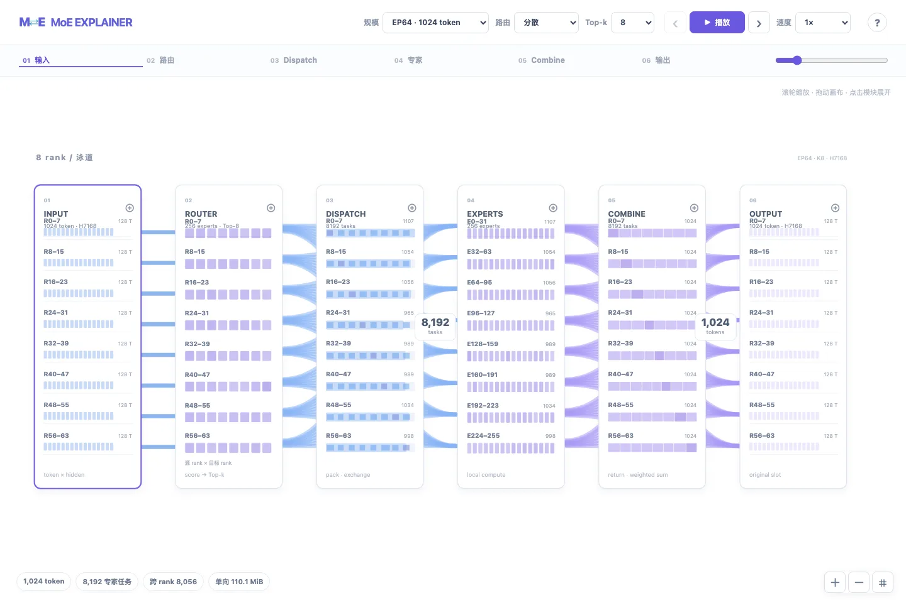
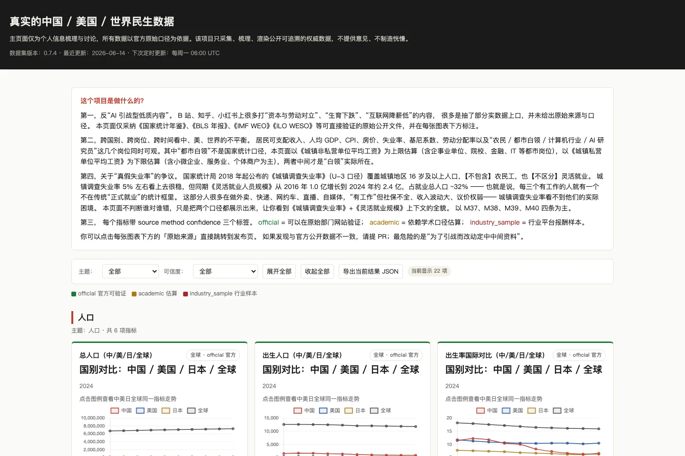

打开网页 ↗INTERACTIVE EXPLAINER01
MoE Dispatch & Combine
看见 token 如何穿过专家网络
从路由、分发到专家计算与结果合并，沿着 token 的路径理解 MoE。切换 EP 规模与 Top-k，观察跨 rank 通信和负载分布。
选择感兴趣的方向，进入独立站点。
显示 5 个项目

打开网页 ↗看见 token 如何穿过专家网络
从路由、分发到专家计算与结果合并，沿着 token 的路径理解 MoE。切换 EP 规模与 Top-k，观察跨 rank 通信和负载分布。
把测量结果变成可探索的证据
交互浏览 Ascend A3 / A5 的 DataCopy 实机测量。按搬运方向、工作集与批量筛选曲线，查看原始 tick、样本和实验条件。

打开网页 ↗探索有边界的渐进式自我表达
围绕日常生活、共同生活、分歧边界与人生方向，探索分阶段披露的阅读体验。公开页为使用虚构非敏感内容的非生产原型。
工作、研究与工程实践的一个切面
在线浏览 AI 系统、昇腾训练推理与高性能计算相关经历、代表项目和论文；支持中英文切换与 PDF 下载。
试试其他关键词，或回到全部项目。
这里收录独立维护的 Web 项目。点击截图或标题即可在新窗口打开。